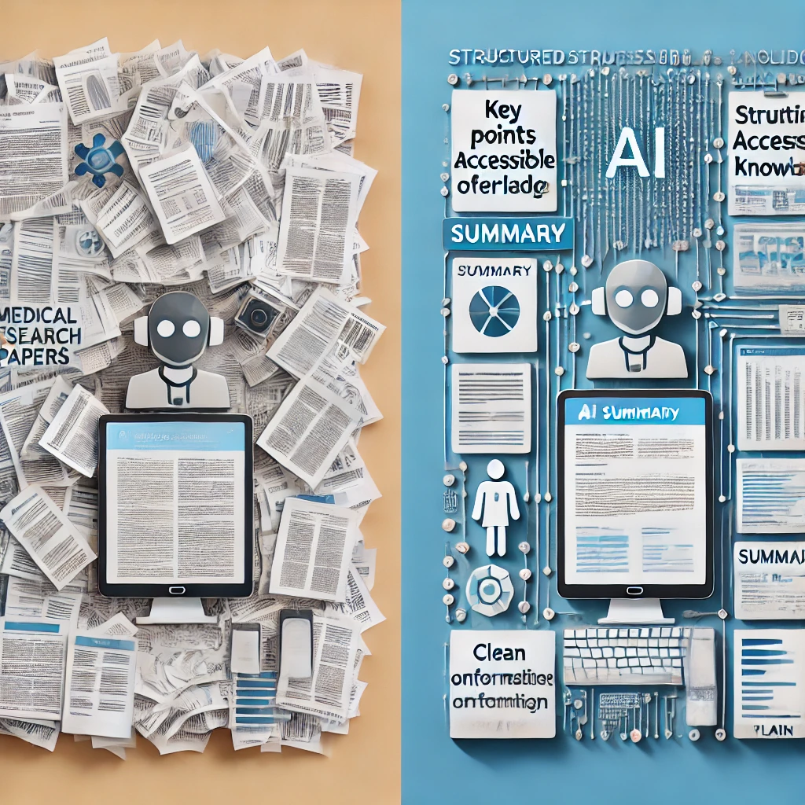
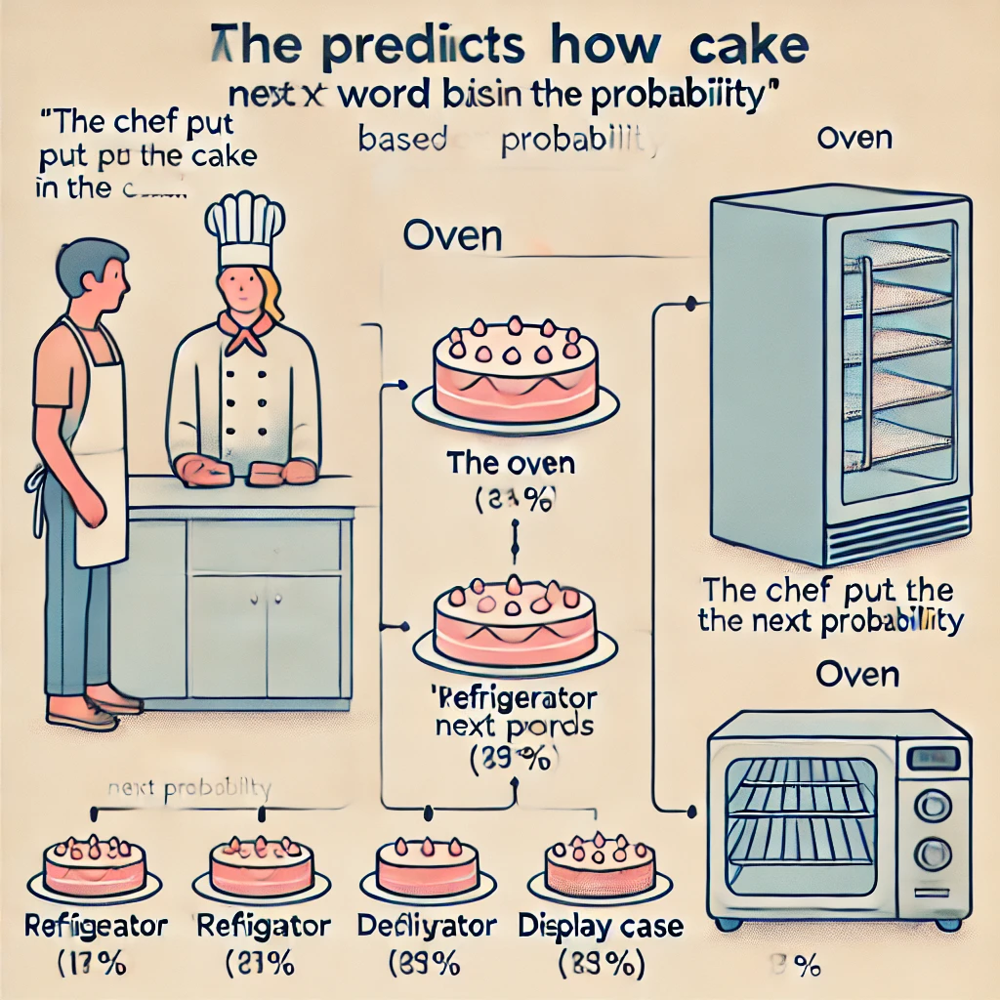

A Practical Guide to Using AI in Everyday Life
… El Lado Humano de la IA
¿Alguna vez has visto a alguien usar una nueva tecnología y hacer que parezca sencillo, sólo para sentirte perdido cuando lo intentas tú mismo? ¿O quizás has escuchado sobre ChatGPT y otras herramientas de IA en las noticias pero aún no las has probado, inseguro de si son demasiado complicadas o técnicas para ti?
No estás solo. Muchas personas encuentran estas tecnologías intimidantes o no están seguras por dónde empezar. La buena noticia es que no necesitas ser un experto en tecnología para usar estas herramientas de manera efectiva. De hecho, las habilidades más importantes que necesitarás son las que ya tienes: curiosidad, criterio y tu propia perspectiva única sobre lo que importa.
De eso se trata este libro: mostrarte cómo combinar tu sabiduría humana con herramientas de IA para lograr cosas que son importantes para ti. Llamamos a esta asociación “Inteligencia Real”, y te coloca a ti —no a la tecnología— en el centro de la experiencia.
Antes de sumergirnos, tómate un momento para anotar tus respuestas a estas preguntas:

Mantén estas respuestas a mano; te ayudarán a personalizar tus primeras experiencias con IA a medida que avanzamos en este capítulo.
En las páginas siguientes, estableceremos un marco simple para pensar sobre las herramientas de IA, demostraremos lo fácil que es comenzar a usarlas (¡sin conocimientos técnicos necesarios!) y te mostraremos por qué tu dirección y criterio son los ingredientes críticos para obtener resultados valiosos.
Comencemos nuestro viaje hacia convertirnos en directores confiados y efectivos de estas poderosas herramientas, comenzando desde la primera interacción.
…La Colaboración Humano-IA
Comencemos con algo simple. No se requieren habilidades técnicas, solo la capacidad de escribir una frase.
Hola, soy nuevo en ChatGPT. ¿Puedes explicarme en términos sencillos en qué me puedes ayudar?¡Eso es todo! Acabas de tener tu primera conversación con IA.

Observa cómo la IA se presenta y explica sus capacidades. Este no es un mensaje pregrabado; la IA está generando esta respuesta específicamente para ti. En los próximos capítulos, aprenderás cómo hacer que estas conversaciones sean cada vez más útiles para tus necesidades específicas.
María, una propietaria de un pequeño negocio sin experiencia técnica, describió su primera experiencia: “Honestamente esperaba que fuera complicado, como si necesitara aprender comandos especiales o algo así. Pero fue como enviar mensajes de texto. Pregunté cómo escribir un mejor boletín por correo electrónico, y en segundos tenía ideas que realmente podía usar. Sin jerga técnica, sin configuración complicada.”
Piensa en las herramientas de IA como electrodomésticos de cocina. Una batidora de pie puede hacer el trabajo duro de mezclar la masa, pero no decide qué receta hacer o sabe cuándo la consistencia es perfecta; ese es tu trabajo. La batidora es muy buena en su tarea específica, pero tú eres quien tiene las papilas gustativas, la creatividad para modificar recetas y el conocimiento de si estás horneando para alguien con restricciones dietéticas.

Inteligencia Real es esta colaboración entre tu juicio humano y las capacidades de la IA. Es lo que sucede cuando tu sabiduría, creatividad y propósito se combinan con la capacidad de la IA para procesar información y generar contenido.
Piensa en la última vez que usaste una herramienta poderosa para resolver un problema. Quizás fue un procesador de alimentos que redujo tu tiempo de preparación a la mitad, o un software de mapas que te ayudó a navegar por una ciudad desconocida. La herramienta fue invaluable, pero tú fuiste quien decidió qué cocinar o a dónde ir. Esa es exactamente tu relación con la IA: no solo estás presionando botones, eres el director creativo que toma las decisiones.

En lugar de pensar en la IA como una entidad mágica con mente propia, considera esta simple relación:
¿Por qué importa tanto esta relación? Porque entenderla transforma la manera en que usarás estas herramientas todos los días.
Cuando reconoces que eres el director y la IA es tu asistente, naturalmente tomas el control del proceso en lugar de aceptar pasivamente lo que la IA produce. Desarrollas expectativas más claras sobre lo que estas herramientas pueden (y no pueden) hacer por ti. Te enfocas en fortalecer las habilidades exclusivamente humanas que la IA no puede replicar. Y quizás lo más importante, mantienes la propiedad de tu trabajo e ideas.
¿No es esa una forma más empoderadora de abordar estas herramientas?
Veamos esta colaboración en acción a través de un ejemplo real.
Luisa, una profesora de ciencias de secundaria sin experiencia previa en IA, quería crear una lección sobre el cambio climático. Podría haber simplemente pedido a ChatGPT que cree una lección sobre cambio climático para estudiantes de 7º grado y usar lo que generara, pero eso habría ignorado su conocimiento único de sus estudiantes.

En cambio, Luisa aplicó su criterio humano. Conocía a sus estudiantes específicos: sus niveles de conocimiento, intereses y los problemas ambientales locales que ven todos los días. Entendía con qué conceptos habían luchado en lecciones anteriores.
Con este contexto que ninguna IA podría poseer, Luisa dirigió a ChatGPT con una solicitud más específica: Ayúdame a crear una demostración interactiva que muestre cómo funcionan los gases de efecto invernadero, adecuada para estudiantes de 7º grado que ya han aprendido sobre el ciclo del agua pero tienen dificultades con conceptos abstractos.
La lección resultante fue mucho más efectiva porque combinó la comprensión de Luisa sobre sus estudiantes con la capacidad de la IA para generar ideas creativas de enseñanza. Esa es la Inteligencia Real en acción: tú sigues siendo central en el proceso mientras aprovechas la IA como una herramienta poderosa.
Ahora es tu turno. Vamos a crear una solicitud que sea específicamente relevante para ti. Completa los espacios en blanco a continuación: Trabajo como _____________ y un desafío que enfrento a menudo es _____________. ¿Podrías sugerirme tres formas en las que podría abordar este problema?

Por ejemplo: Trabajo como gerente de tienda y un desafío que enfrento a menudo es programar al personal de manera eficiente. ¿Podrías sugerirme tres formas en las que podría abordar este problema?
o
Trabajo como padre/madre y un desafío que enfrento a menudo es encontrar actividades educativas para días lluviosos. ¿Podrías sugerirme tres formas en las que podría abordar este problema?
En las siguientes secciones, exploraremos qué hace que la inteligencia humana sea única y cómo complementa las capacidades de la IA. Pero recuerda, no necesitas entender todos los detalles técnicos para comenzar a usar estas herramientas de manera efectiva hoy mismo.
Quizás te estés preguntando… “¿Necesito aprender programación o ciencias de la computación para usar estas herramientas de IA de manera efectiva?”
La respuesta simple es no. Usar herramientas de IA como ChatGPT no requiere más habilidades técnicas que usar un motor de búsqueda o enviar un mensaje de texto. Si puedes escribir una pregunta, puedes usar IA.

Lo que importa mucho más que el conocimiento técnico es tu capacidad para:
Estas son habilidades humanas que has estado desarrollando toda tu vida, y son exactamente lo que te convierte en la Inteligencia Real en esta colaboración.
Para usar las herramientas de IA de manera efectiva, es útil entender qué hace que la inteligencia humana sea diferente de la inteligencia artificial, y por qué esa diferencia crea una asociación tan poderosa.
La inteligencia humana tiene varias cualidades que los sistemas de IA actuales simplemente no poseen, a pesar de sus impresionantes capacidades:
Los humanos no solo hacemos cosas, las hacemos por razones. Nos preguntamos por qué, establecemos metas basadas en nuestros valores y sentimos satisfacción cuando logramos algo significativo. Nos importa profundamente el propósito detrás de una actividad, no solo completarla.
Los sistemas de IA, en contraste, no tienen propósitos o deseos intrínsecos. No quieren nada; simplemente procesan entradas y generan salidas. Cualquier sentido de propósito debe provenir de los humanos que los utilizan.

Piensa en tu profunda comprensión del mundo, construida a través de la experiencia vivida. Sabes cómo se siente cuando te sorprende la lluvia sin paraguas. Entiendes el peso emocional de recibir buenas noticias inesperadas. Comprendes la sutil dinámica social de una reunión familiar.
Los sistemas de IA como ChatGPT han sido entrenados con enormes cantidades de texto que describen el mundo, pero nunca han vivido realmente en él. Han “leído” sobre el helado pero nunca lo han probado. Pueden describir cómo es estar bajo la lluvia, pero nunca han sentido esa repentina salpicadura fría o esa carrera loca buscando refugio. Es como la diferencia entre leer una guía de viaje y visitar realmente un lugar; por muy detallada que sea la guía, hay algo esencial sobre la experiencia que simplemente no puede ser capturado en palabras.
Elena, una profesora de arte jubilada, era escéptica sobre el uso de la IA para su afición a la acuarela. “No veía cómo un programa de computadora podía ayudar con algo tan personal como el arte”, dijo. Pero cuando le pidió a ChatGPT sugerencias para pintar hojas de otoño con más vivacidad, se sorprendió gratamente.

“Las técnicas que sugirió eran fundamentos sólidos, cosas que podría decirles a mis propios estudiantes. Pero aún tenía que aplicar mi sentido del color, mi sentido de la composición y mis propias preferencias estéticas. La IA me dio opciones para considerar, pero las decisiones creativas siguieron siendo mías.”
Esto ilustra otra diferencia clave: la creatividad humana a menudo implica hacer conexiones inesperadas, inspirarse en ideas aparentemente no relacionadas o tener repentinas intuiciones que no se pueden explicar completamente. Nuestra intuición nos permite tomar decisiones basadas en señales sutiles y años de experiencia.
Si bien la IA puede recombinar ideas existentes de maneras impresionantes, no tiene la chispa de inspiración genuina o el sentido intuitivo que permite a los humanos dar saltos más allá de lo que se conoce explícitamente.
Estas diferencias no son debilidades, son la base de una asociación poderosa. La IA y los humanos son como compañeros de equipo con fortalezas complementarias.
Imagina que estás investigando sobre una condición de salud que afecta a alguien que amas. Podrías pasar semanas leyendo revistas médicas, tratando de entender terminología compleja y estudios contradictorios. O podrías pedirle a una IA que resuma la investigación actual, explique términos clave y destaque opciones de tratamiento, todo en minutos. Aquí es donde la IA realmente brilla: procesando vastas cantidades de información que abrumarían incluso al lector humano más dedicado.

La IA sobresale en:
Procesamiento de Información: Sintetizar rápidamente enormes cantidades de información y encontrar patrones en vastos conjuntos de datos.
Producción Consistente: Trabajar incansablemente sin aburrirse, distraerse o emocionarse.
Generación Rápida de Ideas: Producir múltiples opciones, borradores o enfoques para un problema en segundos.
Aprendizaje de Patrones: Identificar tendencias y conexiones en datos que los humanos podrían pasar por alto.
Una forma útil de entender esta relación es pensar en ti mismo como un director de cine y en la IA como tu asistente.

Como director, tú:
El asistente de IA:
Sin el director, el asistente no tendría propósito ni dirección. Sin el asistente, el director tendría que manejar solo cada pequeño detalle.
¿Cómo se ve esto en la práctica? Veamos cómo Marcos, un dueño de un pequeño negocio sin experiencia técnica, pone en acción esta colaboración.
Marcos es propietario de una panadería exitosa y está considerando abrir un segundo local. En lugar de simplemente preguntar a la IA: “¿Dónde debería abrir mi segunda panadería?” — una pregunta que la IA no podría responder bien sin conocer su negocio específico — Marcos dirige la IA con indicaciones más específicas:

¿Qué datos demográficos debería analizar al seleccionar una nueva ubicación para una panadería?Ayúdame a crear una lista de verificación para evaluar posibles espacios comerciales para una panadería.¿Cuáles son los desafíos típicos que enfrentan las panaderías al abrir un segundo local?Observa el patrón aquí: cada pregunta aprovecha la capacidad de la IA para organizar información mientras mantiene a Marcos firmemente en el papel de tomador de decisiones. La IA proporciona marcos e información valiosos, pero Marcos toma la decisión final basada en factores que solo él puede entender completamente: su apetito por el riesgo, su intuición sobre diferentes vecindarios y su visión para su marca.
En la siguiente sección, exploraremos en términos simples cómo funcionan realmente estas herramientas de IA, lo que te ayudará a comprender sus capacidades y limitaciones sin requerir ningún conocimiento técnico.
Para dirigir efectivamente las herramientas de IA, no necesitas entender todos los detalles técnicos, al igual que no necesitas saber exactamente cómo funciona el motor de un auto para conducir de manera efectiva. Sin embargo, tener una comprensión conceptual básica te ayudará a establecer expectativas realistas y usar estas herramientas con mayor habilidad.
Exploraremos cómo funcionan herramientas de IA como ChatGPT, usando analogías simples que destacan tanto sus capacidades como sus limitaciones.
“Cuando escuché por primera vez sobre IA, imaginaba algo de películas de ciencia ficción, como una computadora que piensa y siente”, dice Jaime, un jubilado que ahora usa ChatGPT diariamente para ayudar con su afición a la genealogía. “Pero una vez que comencé a usarla, me di cuenta de que es más como tener un asistente de investigación muy culto que es increíblemente rápido pero necesita dirección cuidadosa.”

En su esencia, una IA como ChatGPT es una sofisticada máquina de completar patrones. Imagina que estás jugando con un amigo donde comienzas una frase y ellos la terminan:
Tú dices: El chef puso el pastel en el...
Tu amigo casi seguramente responde: horno
¿Por qué? Porque basándose en todo el lenguaje que ha encontrado a lo largo de su vida, horno es la palabra más probable que sigue en este contexto.
ChatGPT hace algo similar, pero a una escala mucho mayor. Ha sido entrenado con enormes cantidades de texto de libros, artículos, sitios web y otras fuentes. Durante este entrenamiento, aprendió a reconocer patrones en cómo las palabras e ideas normalmente se siguen unas a otras.

Piénsalo como un músico que ha escuchado miles de canciones pero no entiende realmente la teoría musical. Cuando tarareas algunas notas, el músico puede continuar la melodía basándose en patrones similares que ha escuchado antes. No está componiendo algo verdaderamente original, está recurriendo a toda la música que ha absorbido para continuar el patrón que iniciaste.
Otra forma útil de pensar sobre estas herramientas de IA es como una cámara de eco del conocimiento humano. Solo pueden reflejar información y patrones que ya existen en los datos con los que fueron entrenadas.
Si le preguntas a ChatGPT sobre la Revolución Francesa, puede proporcionar información porque muchos escritores humanos han escrito sobre este tema, y esos escritos formaron parte de sus datos de entrenamiento. Pero si preguntas sobre un evento histórico completamente ficticio del que nadie ha escrito, no puede proporcionar información precisa porque ese patrón no existe en sus datos de entrenamiento.
Esto significa que las herramientas de IA: - Pueden reflejar el conocimiento humano existente y los patrones de escritura - No pueden generar descubrimientos o ideas verdaderamente novedosos que no se deriven de conocimientos existentes - Pueden presentar con confianza información que parece plausible pero que es realmente incorrecta
A pesar de su impresionante capacidad para generar texto similar al humano, ChatGPT no “entiende” realmente el significado de las palabras como lo hacen los humanos. Predice qué palabras es probable que sigan a otras basándose en patrones estadísticos, no en conectar esas palabras con experiencias del mundo real o conceptos más profundos.
Piénsalo como alguien que ha memorizado un libro de cocina en un idioma extranjero sin entender lo que significan las palabras. Podrían recitar recetas perfectamente e incluso hacer sustituciones razonables basadas en patrones que han observado, pero nunca han probado la comida, sentido la textura de los ingredientes o entendido por qué se utilizan ciertas técnicas.

Esta limitación explica por qué la IA a menudo tiene dificultades con: - Razonamiento de sentido común - Comprensión del mundo físico - Captación de causa y efecto - Distinción entre tonterías que suenan plausibles y la verdad real
Cuando ChatGPT genera texto, esencialmente está haciendo una serie de elecciones de palabras basadas en la probabilidad. Para cada posición en una oración, calcula qué palabra es más probable que venga a continuación, dados los términos precedentes y el contexto general.
Imagina un juego donde comienzas una oración, y alguien tiene que adivinar qué palabra viene después:
El chef puso el pastel en el...
La mayoría de las personas adivinarían "horno" porque esa es la palabra más probable que sigue en este contexto. Los sistemas de IA hacen algo similar, pero con una comprensión mucho más sofisticada de los patrones del lenguaje y un vocabulario mucho más amplio de posibles palabras entre las que elegir.

Este enfoque probabilístico significa que: - ChatGPT no tiene un conjunto fijo de respuestas—genera nuevo texto cada vez - Las respuestas pueden variar incluso ante indicaciones idénticas - La IA no “decide” qué decir basada en el razonamiento—selecciona palabras basadas en la probabilidad
Entender estos conceptos básicos sobre cómo funciona la IA ayuda a explicar tanto sus impresionantes capacidades como sus sorprendentes limitaciones:
Puede generar texto similar al humano porque ha aprendido patrones de una vasta cantidad de escritura humana
Puede proporcionar información sobre muchos temas porque ha sido entrenada con textos diversos
Tiene dificultades con la precisión factual porque está prediciendo texto plausible, no verificando la verdad
No puede razonar o entender realmente porque está coincidiendo con patrones, no comprendiendo el significado
No tiene experiencias ni objetivos porque es un sistema de predicción de texto, no una entidad consciente
Estas características hacen que las herramientas de IA sean increíblemente útiles para ciertas tareas, pero también destacan por qué la dirección y el juicio humanos—tu Inteligencia Real—siguen siendo esenciales.
Dadas estas limitaciones, es útil pensar en las herramientas de IA como asistentes en lugar de expertos o autoridades. Pueden ayudarte a hacer lluvia de ideas, redactar contenido, resumir información y explorar ideas, pero siempre debes aplicar tu propio juicio a su producción.

Recuerda a Javier, que está planeando unas vacaciones familiares a Japón. Si simplemente le pide a ChatGPT "Planifica mi viaje perfecto a Japón" y sigue cualquier itinerario que genere, podría terminar con una experiencia turística genérica que no coincide con los intereses de su familia o visitar atracciones que están cerradas por renovación.
En cambio, Javier utiliza su comprensión de las limitaciones de la IA para dirigir la herramienta de manera más efectiva. Sabe que: - La información de la IA podría estar desactualizada - No conoce las preferencias específicas de su familia - No puede verificar si los alojamientos sugeridos están realmente disponibles
Así que utiliza la IA como un asistente para tareas específicas donde la coincidencia de patrones es útil—generar ideas para actividades aptas para niños en Tokio, sugerir redacción para frases básicas en japonés o crear una lista de comprobación para el equipaje—mientras maneja por sí mismo las decisiones críticas y verifica información clave a través de otras fuentes.
En la siguiente sección, exploraremos cómo tomar el control de esta asociación humano-IA para obtener el mayor valor de estas herramientas poderosas pero limitadas.
Ahora que entendemos la relación entre la inteligencia humana y las capacidades de la IA, enfoquémonos en dos elementos críticos que harán que tus experiencias con IA sean exitosas: cómo dirigir efectivamente estas herramientas y qué deberías esperar realistamente de ellas.
¿Recuerdas nuestra metáfora del director de cine? Ampliemos lo que significa ser un director efectivo de herramientas de IA.

Así como un director de cine no simplemente dice a los actores “hagan una buena escena” y espera lo mejor, tú no deberías acercarte a la IA con peticiones vagas y una aceptación pasiva de lo que sea que produzca. La mentalidad del director involucra varias prácticas clave:
“Solía comenzar haciéndole a ChatGPT preguntas vagas y me frustraba con las respuestas genéricas”, explica David, un consultor de pequeñas empresas. “Ahora siempre me tomo un momento para aclarar exactamente lo que necesito antes incluso de abrir la aplicación.”
Antes de interactuar con la IA, pregúntate:
Esta claridad te ayuda a dar indicaciones más efectivas y evaluar las respuestas de la IA de manera más crítica.
Las indicaciones vagas conducen a respuestas genéricas. Cuanto más específica sea tu dirección, más útil será la asistencia de la IA. Compara estos enfoques:
Dirección vaga: “Dame algunas ideas de marketing.”
Dirección específica: “Dirijo un puesto de venta de productos de granja orgánica local dirigido a familias conscientes de la salud. Sugiéreme cinco enfoques de marketing de bajo presupuesto que nos ayuden a enfatizar nuestras prácticas agrícolas sostenibles y nuestras raíces comunitarias.”

La dirección específica proporciona contexto y limitaciones que ayudan a la IA a generar respuestas relevantes adaptadas a tus necesidades.
Trabajar con IA raramente es un proceso de una sola vez. Piénsalo como una conversación en lugar de una sola pregunta y respuesta.
“Al principio simplemente aceptaba lo que la IA me daba”, dice Pilar, una escritora freelance. “Ahora sé que la magia ocurre en el ida y vuelta. Diré ‘eso es demasiado formal’ o ‘puedes añadir más ejemplos sobre X’ y los resultados mejoran dramáticamente.”
No te conformes con la primera respuesta si no satisface completamente tus necesidades. En cambio, proporciona retroalimentación y dirección adicional para guiar a la IA hacia resultados más útiles:
Eso es útil, pero ¿podrías hacerlo más simple?Me gusta más la tercera idea. ¿Puedes ampliar específicamente ese enfoque?Estos ejemplos son demasiado técnicos. ¿Puedes reescribirlos para alguien sin experiencia en este campo?Aproxímate al contenido generado por IA con un escepticismo saludable. Pregúntate:

Recuerda que tú eres el juez final de la calidad y la idoneidad. La IA está ahí para ayudarte, no para tomar decisiones finales.
Cuando combinas la dirección humana con las capacidades de la IA, sucede algo notable: ambas se amplifican más allá de lo que cualquiera podría lograr por sí sola. Esta es la esencia de la Inteligencia Real.
Sara, una profesora de inglés de secundaria, experimenta esta amplificación cuando planifica su currículum. Podría pasar horas buscando materiales de lectura relevantes, redactando preguntas para discusión y creando tareas. En cambio, dirige a ChatGPT con sus objetivos educativos específicos y conocimiento de sus estudiantes:

“Necesito diseñar una unidad sobre ‘identidad’ para mi clase de inglés de 10º grado. Muchos de mis estudiantes son estadounidenses de primera generación que a menudo discuten los desafíos de navegar entre culturas. Sugiere cuentos contemporáneos de autores diversos que exploren la formación de identidad, y para cada historia, esboza posibles preguntas de discusión que conecten con la experiencia inmigrante.”
Con esta dirección, ChatGPT puede generar rápidamente sugerencias que Sara luego evalúa basadas en su juicio profesional, conocimiento de sus estudiantes específicos y requisitos curriculares. Puede aceptar algunas sugerencias, modificar otras y rechazar aquellas que no encajan con su visión.
El resultado es un currículo que refleja la experiencia de Sara y su comprensión de sus estudiantes, pero que se desarrolló de manera más eficiente y con una gama más amplia de perspectivas de lo que podría haber logrado trabajando completamente por su cuenta. Esa es la Inteligencia Real en acción.
Uno de los mayores desafíos al trabajar efectivamente con herramientas de IA es establecer expectativas realistas. El bombo mediático a menudo presenta la IA como máquinas pensantes mágicas o amenazas inminentes para la humanidad, ninguna de las cuales refleja con precisión la realidad de las herramientas actuales como ChatGPT.
“Honestamente estaba intimidado por todas las noticias sobre IA”, admite Ramón, un contador jubilado. “Esperaba que fuera imposiblemente compleja de usar o inquietantemente parecida a un humano. La realidad fue mucho más práctica: útil en algunos aspectos, limitada en otros.”
Establezcamos una comprensión equilibrada de lo que estas herramientas pueden y no pueden hacer para ayudarte a usarlas más efectivamente.
La IA sobresale en producir varios tipos de contenido escrito, desde escritura creativa hasta explicaciones técnicas, desde conversaciones casuales hasta documentos formales. Puede adaptar su tono, estilo y nivel de complejidad según tu dirección.

La IA puede tomar grandes cantidades de información y destilarla en resúmenes, puntos clave o formatos estructurados que son más fáciles de entender y usar.
La IA puede generar rápidamente múltiples opciones, perspectivas o enfoques para un problema, ayudándote a explorar posibilidades que quizás no habías considerado por tu cuenta.
La IA puede crear borradores iniciales de muchos tipos de contenido y ayudar a mejorar el texto existente sugiriendo ediciones, reorganización o frases alternativas.
La IA puede explicar temas complejos en términos más simples o proporcionar explicaciones más detalladas de conceptos básicos, adaptándose a diferentes niveles de conocimiento y necesidades de aprendizaje.
La IA puede representar diferentes puntos de vista o áreas de experiencia, permitiéndote explorar cómo diferentes personas podrían abordar una situación.
Los modelos de lenguaje de IA no tienen la capacidad de verificar hechos de forma independiente. Pueden presentar con confianza información incorrecta (a veces llamada “alucinaciones”) que suena plausible pero es realmente errónea.

Los datos de entrenamiento de IA tienen una fecha límite, después de la cual el modelo no tiene conocimiento de eventos mundiales, nuevos productos o desarrollos recientes a menos que se actualice específicamente.
La IA no sabe quién eres, tu historia personal o tus circunstancias específicas a menos que compartas explícitamente esta información en tu conversación.
Los modelos de lenguaje de IA no pueden acceder directamente a internet, ejecutar programas o interactuar con otros sistemas a menos que estén específicamente integrados con esas capacidades.
La IA puede simular consejos u opiniones, pero carece de la experiencia vivida, el fundamento moral y la comprensión contextual necesarios para la verdadera sabiduría o juicio.
Aunque la IA puede recombinar conceptos existentes de nuevas maneras, no genera ideas verdaderamente novedosas desconectadas de sus datos de entrenamiento.
Abordemos algunos conceptos erróneos frecuentes sobre las herramientas de IA que pueden llevar a expectativas poco realistas:
Realidad: La IA solo conoce lo que estaba en sus datos de entrenamiento, y ese conocimiento no es ni completo ni siempre preciso. Puede presentar información incorrecta con alta confianza.
Realidad: La IA refleja los sesgos presentes en sus datos de entrenamiento y los introducidos por sus creadores. No tiene un punto de vista neutral u objetivo.
Realidad: La IA genera texto sin comprensión genuina. No entiende los conceptos como lo hacen los humanos; predice patrones en el lenguaje sin conectarlos con el significado del mundo real.
Realidad: La IA simula opiniones basadas en patrones en sus datos de entrenamiento, pero realmente no tiene creencias o convicciones.

Realidad: La mayoría de las herramientas de IA no aprenden de tus interacciones a menos que estén diseñadas específicamente para hacerlo. Tus conversaciones típicamente no hacen que la IA sea más inteligente o más personalizada para ti con el tiempo.
Una pauta útil cuando se usan herramientas de IA es lo que podríamos llamar el “principio de verificación”: la importancia de una respuesta generada por IA debe ser proporcional a tus esfuerzos de verificación.
En otras palabras:

Miguel, un fotógrafo aficionado investigando equipos de cámara, aplica este principio: “Uso ChatGPT para obtener explicaciones rápidas de conceptos técnicos y generar preguntas que debería hacer. Pero antes de gastar 2,000 dólares en una nueva cámara, siempre verifico los detalles específicos del modelo en el sitio web del fabricante y leo reseñas de sitios de fotografía confiables.”
Este principio te ayuda a usar la IA de manera eficiente mientras gestionas los riesgos asociados con sus limitaciones.
Para abrazar plenamente tu papel como director de herramientas de IA, considera este enfoque general:
Define tu objetivo claramente antes de interactuar con la IA
Proporciona contexto y limitaciones que ayuden a la IA a entender tu situación específica
Comienza con preguntas o solicitudes específicas en lugar de indicaciones abiertas
Evalúa las respuestas críticamente, buscando tanto elementos útiles como problemas potenciales
Proporciona retroalimentación y refinamiento para guiar a la IA hacia respuestas más útiles
Integra múltiples fuentes, sin depender únicamente del contenido generado por IA
Toma las decisiones finales basadas en tu juicio, valores y conocimiento

Este enfoque te coloca firmemente en control del proceso mientras aprovechas las capacidades de la IA para mejorar tu pensamiento y productividad.
En la siguiente sección, pondremos estas ideas en práctica con actividades prácticas diseñadas para ayudarte a desarrollar tus habilidades como director de IA.
¡Pongamos en práctica todo lo que hemos aprendido! Estas actividades prácticas te ayudarán a desarrollar tus habilidades de dirección de IA mientras experimentas de primera mano cómo tu aportación da forma a los resultados que obtienes.
Recuerda, no hay mejor manera de aprender que haciendo. No te preocupes por cometer errores, son parte del proceso de aprendizaje.

Objetivo: Usar la IA como compañero de pensamiento para amplificar tu propia inteligencia en un desafío personal.
Lo que necesitarás: - Acceso a ChatGPT - Un problema o desafío real que estés enfrentando actualmente - 15-20 minutos
Instrucciones:

Antes de consultar con la IA, dedica 3-5 minutos a escribir tus propios pensamientos sobre el desafío:
Ahora, elabora una indicación que pida a la IA que te ayude a pensar en este desafío. Incluye:
Revisa la respuesta de la IA e identifica al menos una idea o perspectiva que no habías considerado completamente.
Haz un seguimiento con al menos una pregunta aclaratoria o solicitud basada en la respuesta de la IA.
“Usé este enfoque cuando planificaba un cambio de carrera”, comparte Tania, una ex gerente de tienda minorista que ahora trabaja en administración de salud. “La IA no me dijo qué hacer, pero me ayudó a organizar mis pensamientos y considerar aspectos en los que no había pensado, como qué habilidades transferibles ya tenía.”
Preguntas de reflexión:
Objetivo: Practicar mantener la propiedad de un proyecto creativo mientras usas la IA como asistente.
Lo que necesitarás: - Acceso a ChatGPT - 20-30 minutos
Instrucciones:

Comienza por definir tu visión para el proyecto. Escribe:
Crea una serie de solicitudes específicas para ChatGPT que te ayudarán con diferentes aspectos de tu proyecto. En lugar de pedirle que complete todo el proyecto, divídelo en componentes donde la asistencia de IA sería útil. Por ejemplo, si estás escribiendo un cuento corto:
Sugiere tres posibles párrafos de apertura para una historia sobre...Ayúdame a desarrollar el personaje principal que es...Proporciona algo de lenguaje descriptivo para el escenario de...Para cada respuesta de la IA, selecciona elementos que te gusten, modifica otros y descarta aquellos que no se ajusten a tu visión.
Ensambla el proyecto final tú mismo, integrando elementos asistidos por IA con tus propias contribuciones.
“Usé este enfoque para planificar la fiesta de cumpleaños de mi hija”, explica Wei, un padre ocupado. “Tenía en mente un tema de dinosaurios pero necesitaba ayuda con ideas para juegos y decoraciones. En lugar de pedir un plan completo para la fiesta, hice preguntas específicas sobre cada aspecto y reuní los elementos que me gustaron. La fiesta se sintió como mi creación, no algo que hizo una IA.”
Preguntas de reflexión:
¡Felicitaciones por completar estas actividades! Has dado tus primeros pasos para convertirte en un hábil director de IA. A través de estos ejercicios, has experimentado de primera mano cómo tu dirección da forma a los resultados de la IA, cómo mantener el control de los procesos creativos y cómo establecer límites saludables para el uso de IA en tu vida.

Recuerda que el concepto de Inteligencia Real enfatiza que tú—el humano—eres la inteligencia esencial en esta asociación. La IA es una herramienta que amplifica tu pensamiento, pero la dirección, el propósito y la sabiduría provienen de ti.
“Antes de probar estas actividades, sentía que la IA era esta cosa misteriosa que no podía entender posiblemente”, comparte Jordán, un propietario de pequeña empresa. “Ahora veo que es solo una herramienta—una poderosa, pero aún solo una herramienta que yo controlo. Ese cambio de perspectiva ha marcado toda la diferencia.”
En los capítulos siguientes, construiremos sobre estos fundamentos explorando aplicaciones y técnicas más específicas para usar herramientas de IA de manera efectiva en varios aspectos de tu vida. Comenzaremos configurando tu cuenta gratuita de ChatGPT y recorriendo los conceptos básicos de la interfaz, para que puedas comenzar a aplicar lo que has aprendido de inmediato.
Por ahora, tómate un momento para reflexionar sobre lo que has descubierto acerca de la asociación humano-IA y cómo podrías empezar a incorporar estas herramientas en tu vida de manera que se alineen con tus objetivos y valores.